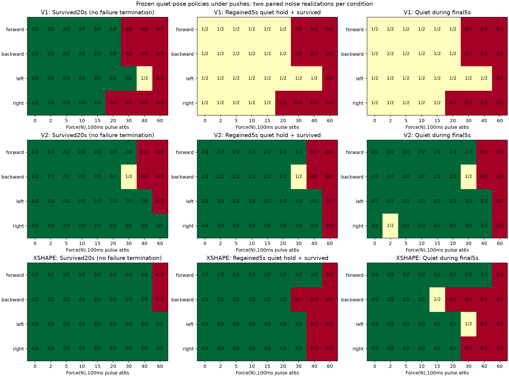

Each video shows four independent fresh-start trials: 0,5,20 and60N. A single horizontal100ms pulse acts at the torso centre of mass at6s. Red arrows show the force while active. Blue left foot, orange right foot.
All models use their saved best quiet-pose policy, unchanged. Foot lifts and shifts are allowed during this evaluation so recovery remains visible. Survival, regaining a five-second quiet hold, and a quiet final five-second window are reported separately. Physical failures freeze visibly; no reset is spliced into a video.
The plots cover four directions and two paired noise realizations,66trials per model. Videos show the first noise realization, forward and left directions. Counts out of two are exploratory observations, not proven safety limits.
Speed:
Protocol, plots and results · Original quiet-pose videos

Best checkpoint +58.98M. Zero-force controls: 2/2 survive, 2/2 finish with a quiet hold. Weights unchanged: True.
Best checkpoint +100.01M. Zero-force controls: 2/2 survive, 2/2 finish with a quiet hold. Weights unchanged: True.
Best checkpoint +66.36M. Zero-force controls: 2/2 survive, 1/2 finish with a quiet hold. Weights unchanged: True.